Rostas Coordinator Guide
Fair, automatic, kind rostering for churches and volunteer organisations.
What is Rostas?
Rostas is your organisation's volunteer roster assistant. It handles the time-consuming, people-sensitive work of building rosters, collecting availability, and finding replacements when someone can't make it — automatically, fairly, and kindly.
Once set up, Rostas runs most of the roster cycle on its own. Your job shifts from juggling spreadsheets and chasing people by text to simply reviewing what Rostas has prepared and pressing go.
| The old way | The Rostas way |
|---|---|
| 2–3 hours of emails, calls, and chasing | Under 1 hour via a guided 6-step wizard |
| Flat yes/no availability guesswork | 3-state availability + 4-tier role preferences |
| Coordinator manually calls around when someone cancels | Automated SMS replacement chain handles it automatically |
| More risk of volunteer burnout from over-rostering | Frequency caps and self-serve opt-outs built in |
How Rostas Works — The Big Picture
Rostas works in a rhythm that repeats every few weeks. The six-step Roster Wizard guides you through each stage in order:
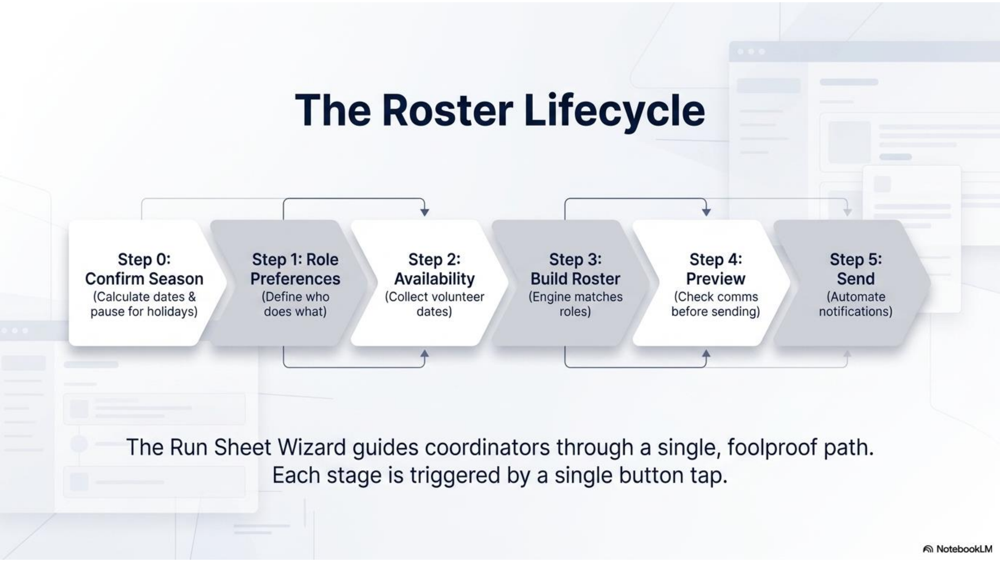
| Step | Name | What happens |
|---|---|---|
| 1 | Confirm Dates & Roles | Rostas refreshes your seasons calendar, overlays public and school holidays, and confirms your roles list is up to date. |
| 2 | Role Prefs | Volunteers (or the coordinator) set which roles the volunteer is willing to perform — Primary, Fillable, or Not for me. Set once, remembered for every future build - editable in Profile pages. |
| 3 | Availability | Rostas can email each volunteer asking which upcoming dates they're available for or this step can be skipped by the coordinator. Volunteers tap a link in emails or fill or use the code from the text to go to the edit their availability dates. |
| 4 | Build Roster | The engine automatically fills every slot using a four-tier priority system. The build takes 2 or 3 minutes. |
| 5 | Check Roster | You review what Rostas has built using the traffic light system — green filled, amber pending, red unfilled. Coordinator can add replacements or make swaps at this point if required. |
| 6 | Notify | Rostas emails every rostered volunteer their assignments. Automatic reminders follow closer to the date — no further action needed. |
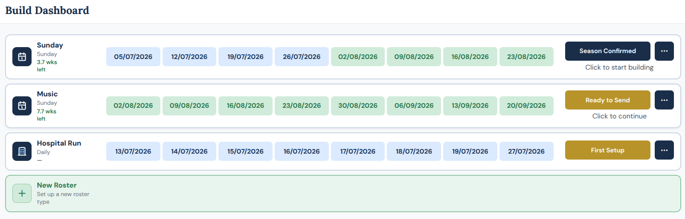
Key Concepts
Availability — Simple for Volunteers
Before each build, Rostas can email your volunteers asking which upcoming dates they're available for. Volunteers receive a personalised link and see a simple calendar of dates. Everything starts as Available — volunteers only change the dates they can't make.
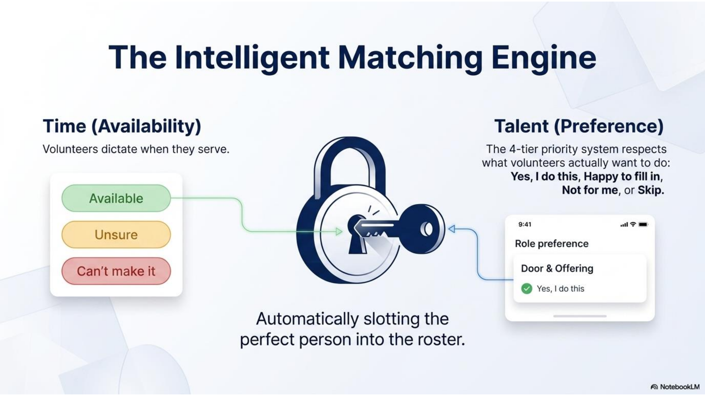
The Intelligent Matching Engine
The roster engine doesn't fill slots blindly. It uses a four-tier priority system that respects both when volunteers can serve and what they actually want to do:
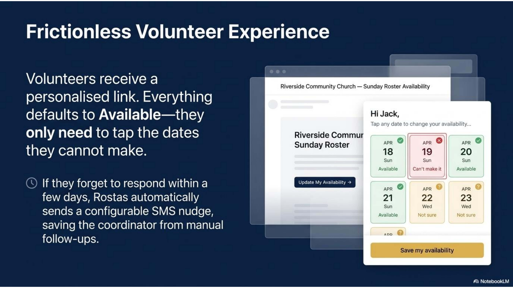
| Tier | Availability | Role match | Priority |
|---|---|---|---|
| 1 | ✅ Available | Primary role (Yes, I do this) | Highest — assigned first |
| 2 | ✅ Available | Fillable role (Happy to fill in) | Second choice |
| 3 | ❓ Not sure | Primary role | Third — provisional |
| 4 | ❓ Not sure | Fillable role | Last resort |
Within each tier, Rostas selects the volunteer who has been rostered least recently — keeping things fair automatically over time without any manual tracking.
The Roster Board
The Board is your day-to-day view of the current roster. It shows every slot, every date, and every volunteer assignment at a glance. A traffic light colour system tells you instantly what's filled, what's pending, and what needs attention.
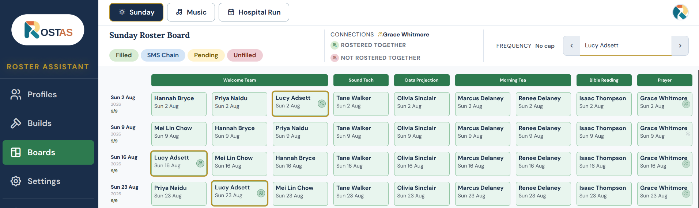
The Automated SMS Replacement Chain
When a rostered volunteer can't make it, they tap a link in their notification email. Rostas immediately starts working through the backup list — no coordinator involvement needed.
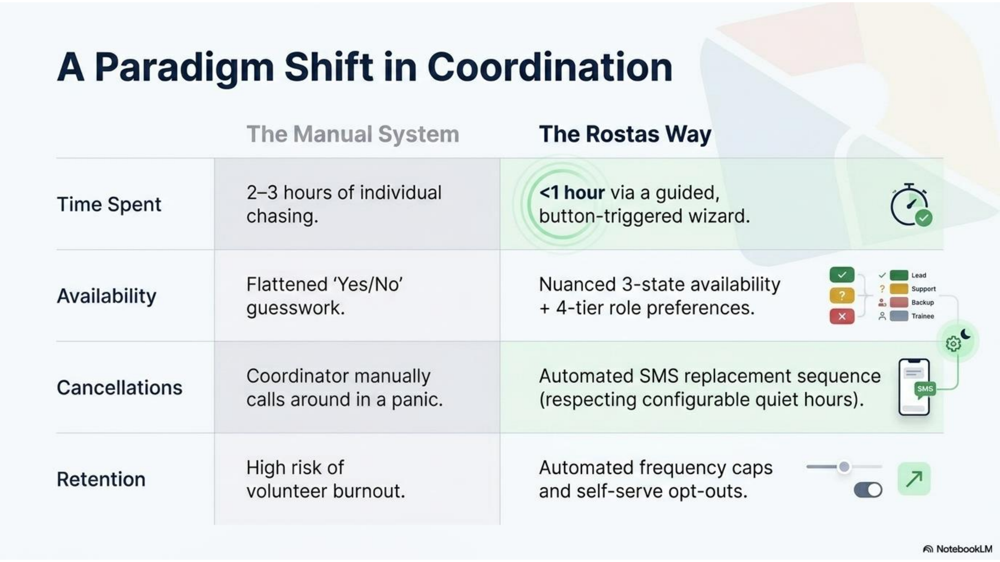
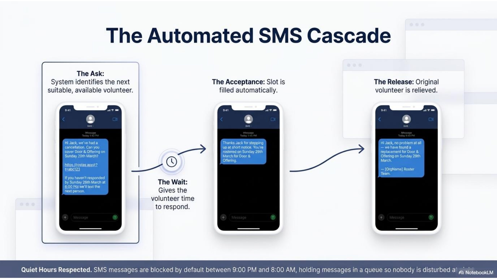
When Rostas needs a reply by text — a replacement request, a manual-roster heads-up, or a cross-roster ask — the message contains a 4-digit code, not a link. New Zealand mobile networks silently filter many texts that contain web links, so a tappable link in an SMS can't be relied on to arrive. On SMS a short code does double duty: it survives carrier filtering and it's far shorter than a link, keeping each message inside the single-text limit so your church isn't charged for two.
The volunteer opens https://rostas.app/enter and types the 4-digit code from their text. The code is single-use and expires after a short window, so it can't be reused or forwarded. Once entered, they land on the same accept / decline page they'd have reached from a link.
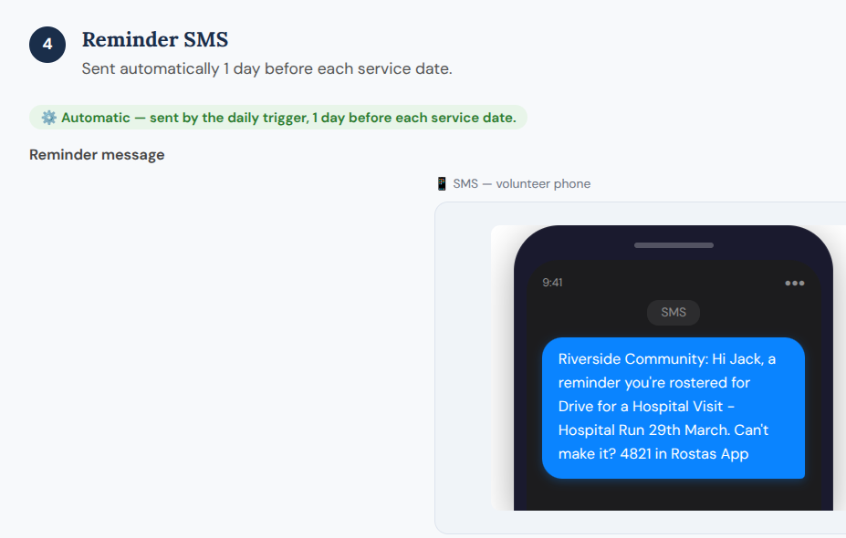
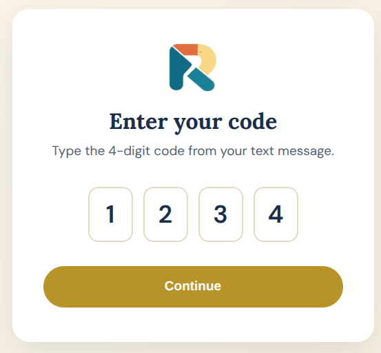
Looking After Your Volunteers
Rostas is designed with your volunteers in mind, not just your roster.
| Feature | What it does for your volunteers |
|---|---|
| Frequency caps | Set a maximum number of times each volunteer can be rostered per number of weeks. The engine never exceeds this, even if they're always available. |
| Quiet hours | No automated SMS during the quiet window you set in Settings (default 9pm–8am). Volunteers are never disturbed at night. |
| Self-serve opt-out | Volunteers can pause or opt out of SMS and email at any time using a link in any Rostas message — no need to contact you. They may be happy just to print out their roster. |
| Relational rostering | Rostas tries to schedule family members and preferred buddies on the same dates — making it easier to serve together or share transport. |
Who Does What
Rostas is designed so that most of the routine work happens automatically. Here's how responsibilities divide between you, your volunteers, and Rostas:
| Who | What they do |
|---|---|
| You — the coordinator | Run the 6-step wizard each cycle, review the built roster, handle exceptions, manage volunteers and settings |
| Your volunteers | Respond to availability emails, set role preferences, accept or decline replacement requests by entering a short code from sms or tapping a link in an email. |
| Rostas | Everything in between — building the roster, sending notifications, chasing replacements, sending reminders, enforcing frequency caps |
Where to Start
The guide is organised into six parts. Jump to the section that matches where you are right now:
| Part | Title | Start here if… |
|---|---|---|
| A | Introducing Rostas | You're here ✓ |
| B | Setting Up Rostas | Rostas is brand new at your organisation and needs initial configuration |
| C | Profiles | Your volunteers aren't in Rostas yet, or you need to add, import, or edit them |
| D | The Roster Cycle | Your volunteers are in and you're ready to build a roster |
| E | Using the Board | You need to manage replacements or make changes between builds |
| F | Settings & Troubleshooting | You need to change a setting or something isn't working as expected |
When you open Rostas for the first time, the setup wizard runs automatically. It takes about five minutes and covers the essentials — your organisation name, your contact details, and a quick SMS test to make sure everything is working before your first roster build.
The wizard runs once. After it's complete, Rostas opens directly to the Builds dashboard on every future visit.
The Setup Wizard
The wizard has four steps shown across the top of the screen. You can see at a glance how far through you are and what's coming next.
Step 1 — Your Organisation
The first step establishes your organisation's identity. The name you enter here appears in every message sent to volunteers — availability emails, roster notifications, and SMS reminders.
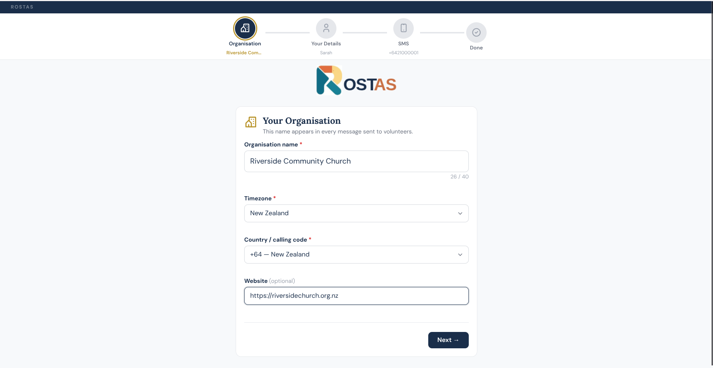
| Field | What to enter | Required? |
|---|---|---|
| Organisation name | Your organisation's full name as you want it to appear to volunteers — e.g. "Riverside Community Church". Maximum 40 characters. | Yes |
| Timezone | Select your timezone from the dropdown. This controls all scheduling and quiet hours. | Yes |
| Country / calling code | Select your country. This is used to format volunteer phone numbers correctly for SMS delivery. | Yes |
| Website | Optional. Your organisation's website URL — must start with https:// | No |
Click Next → when all required fields are filled. The button stays disabled until everything is valid.
Step 2 — Your Details
Step 2 captures the primary coordinator's contact details. These are used for SMS test sends, coordinator escalation alerts when the replacement chain is exhausted, and the bottom of the coordinator app sidebar.
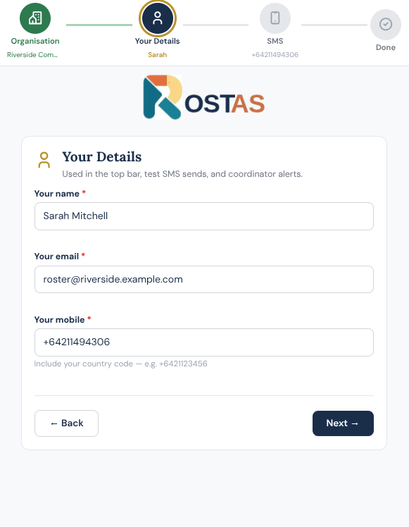
| Field | What to enter |
|---|---|
| Your name | Your full name as coordinator — e.g. "Sarah Mitchell" |
| Your email | Your email address — receives error alerts and escalation notifications |
| Your mobile | Your mobile number in full international format — e.g. +6421123456. Must include country code. |
Step 3 — SMS Test
Before your first roster build, Rostas verifies that SMS is working. This step sends a real test message to your mobile so you can confirm everything is set up correctly.
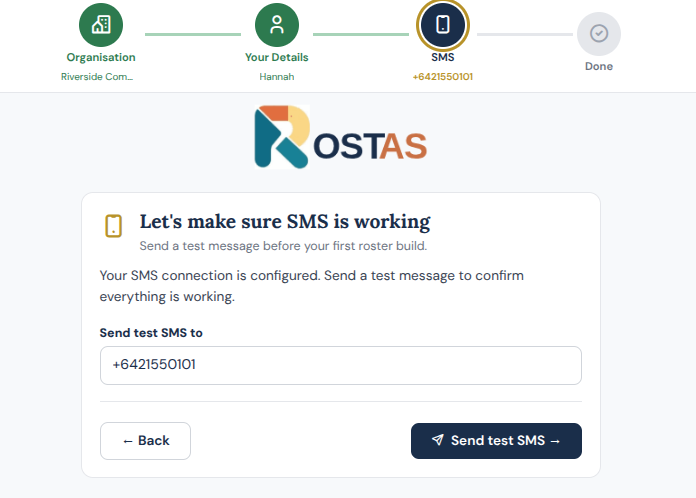
Your mobile number is pre-filled from Step 2. Tap Send test SMS → and wait for the message to arrive on your phone — usually within 30 seconds. Once received, a green confirmation appears and the Next button enables.
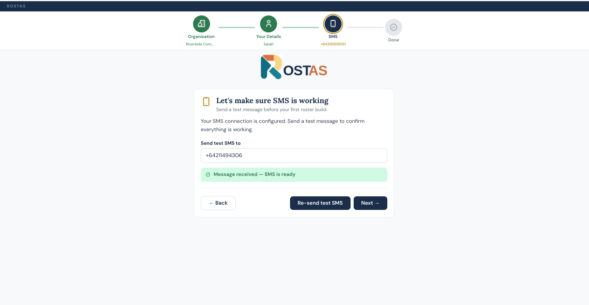
buy-credits.png
Step 4 — Done
Once SMS is confirmed, the wizard completes and Rostas is ready to use.
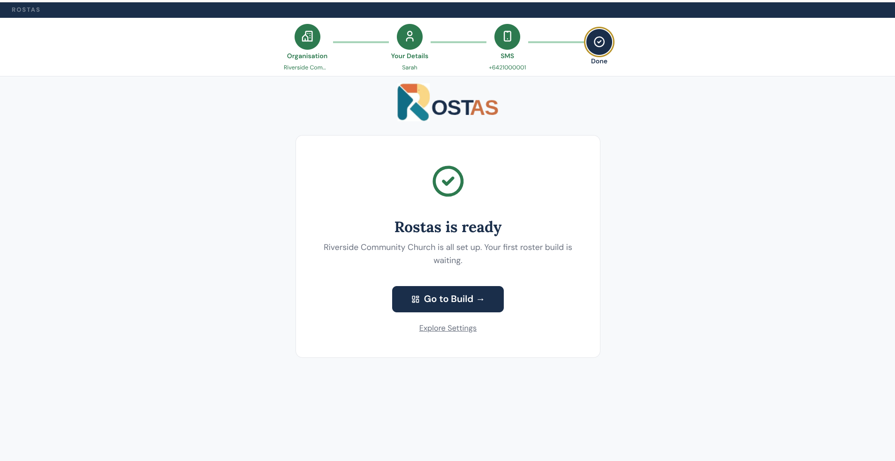
From here you have two options:
- Go to Build → — takes you straight to the Builds dashboard, ready to start your first roster cycle. This is the right choice if your volunteers are already imported.
- Explore Settings — opens the Settings view if you want to review or customise anything before you import volunteers or do your first first build.
What's Next
Rostas is set up. Next, get your volunteers in: head to Part C — Profiles to import or add them and set up how each one serves. Once your profiles are in, Part D — The Roster Cycle walks you through building your first roster.
- ✓ Organisation name set
- ✓ Coordinator contact details set
- ✓ SMS test confirmed working
- Volunteers imported or added
- Full profile set up for each volunteer in your first roster build
The Profiles section is where you manage everyone who serves in your organisation. Access it by clicking Profiles in the sidebar. From here you can view all volunteers, add new ones, edit details, view role lists, and manage per-roster settings like role preferences, frequency caps, and availability.
Importing your volunteers from CSV
The quickest way to get your volunteers into Rostas is to import a spreadsheet — from a previous roster system, a church database, or even a simple contact list. This is how most organisations start. If your volunteers already live in another system, you may be able to sync them automatically instead — see the Connector Appendix.
Open the Profiles list and click Import Volunteer CSV on the toolbar. The import runs in three steps.
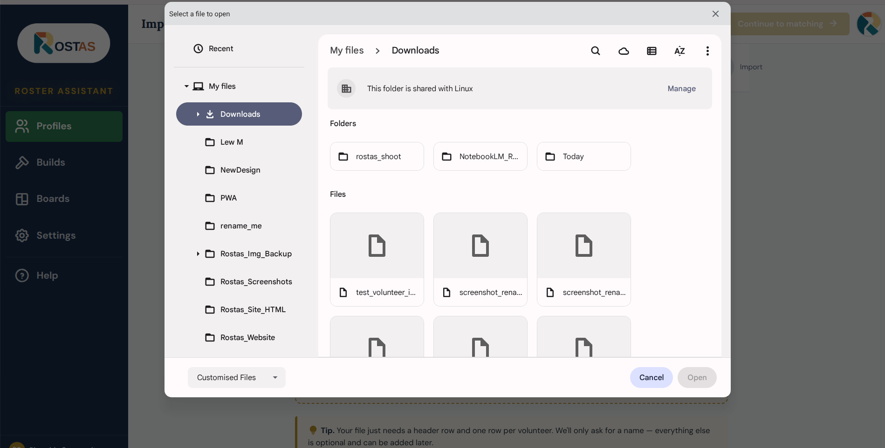
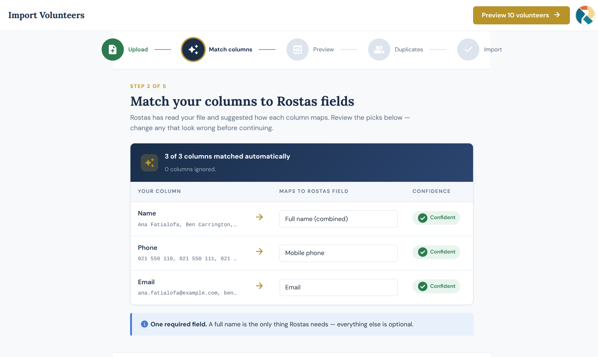
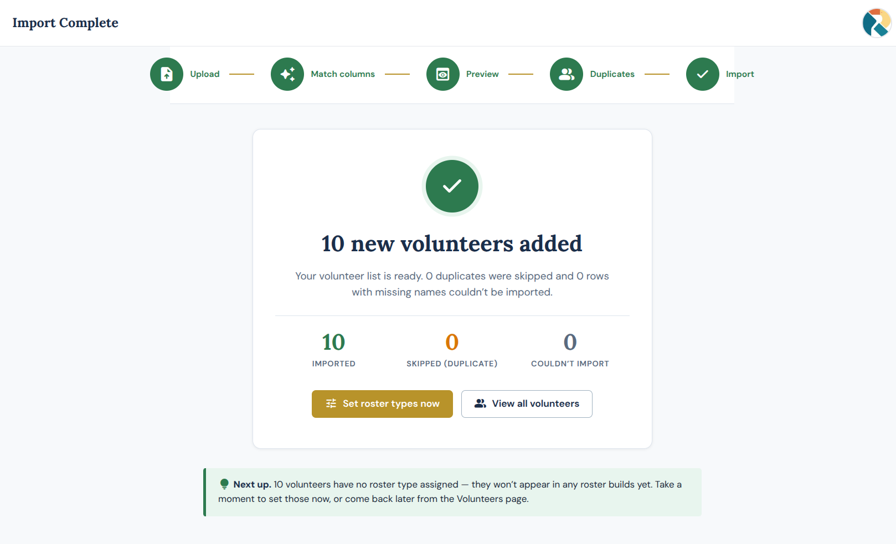
Adding a volunteer manually
For one-offs — a single new volunteer between imports — click Add Volunteer on the Profiles toolbar. Fill in their details and save; they appear in the list immediately and can be included in your next build.
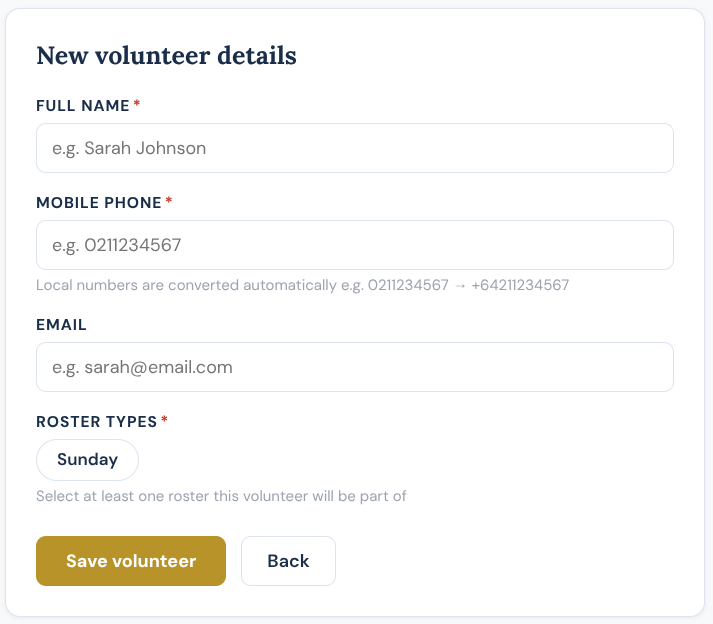
| Field | What to enter | Required? |
|---|---|---|
| Full name | As you want it to appear in rosters and messages | Yes |
| Mobile | e.g. +6421123456 | Yes (for SMS) |
| For notifications and availability requests | Yes (for email) | |
| Roster types | Which rosters they serve in — tick all that apply | Yes |
The profiles list
Once your volunteers are in, the Profiles list shows everyone — name, roster types, phone, and email — in one place. Search by name, email, or phone, or filter by Roster Type at the top of the page, or Active, Inactive, or All using the chips below the search bar. Click any row to open that volunteer's profile.
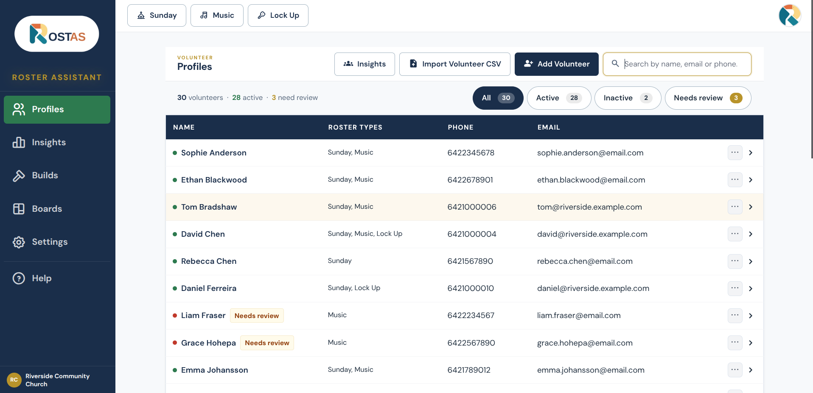
The Profile Detail Page
Click any volunteer in the list to open their profile. This is where you manage everything about that person — their contact details, which rosters they serve in, the roles they do, how often they serve, who they serve alongside, and their availability. The left panel holds their contact details and a tab pill per roster type; the right panel holds the settings for whichever roster tab is selected, so each roster a volunteer serves in has its own independent setup.
Contact details & toggles
The left panel shows the volunteer's name, phone, email, and status, with four toggles that control how Rostas treats them:
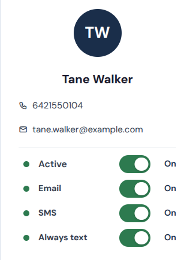
| Toggle | What it controls |
|---|---|
| Active | Whether this volunteer appears in roster builds. Turn off to pause someone without deleting them. |
| Whether they receive email notifications. Turn off if they've opted out or prefer SMS only. | |
| SMS | Whether they receive SMS messages at all. Turn off if they've opted out of texts. |
| Always text | Opts this volunteer in to the day-before reminder text even when the reminder mode would otherwise skip them (see Settings — reminder mode). Useful for volunteers who reliably miss email. In settings Text non-responders (recommended) texts only volunteers with no email, those who haven't confirmed the reminder email, and anyone set to "Always text" in this profile details page. |
Roles — what they do
The Roles section on the right panel is where you set which roles this volunteer performs in this roster. Each role shows as Does This, Fills In, or Doesn't Do
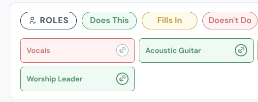
Linking roles together
Sometimes two roles should travel together — Say a worship leader always also plays an acoustic guitar. Role linking handles this. Both roles must be set to Does This first; then click the link icon (🔗) on a role card to open a dropdown of roles you can link it to, and choose the link type.
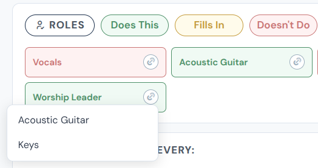
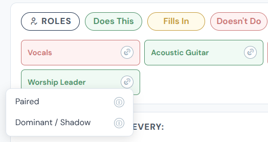
| Link type | How it behaves |
|---|---|
| Dominant — Shadow | One-way pairing. When the dominant role is filled by this volunteer, Rostas pulls them into the shadow role on the same date too — but not the other way around. Use it when one role should drag a second along with it. For example when Sam is worship leading he always plays acoustic guitar, but when Sam is rostered to play acoustic guitar he is not always worship leading. |
| Equal Pairing | Two-way pairing . The two roles are always scheduled together — the volunteer is placed in both or neither. Use it when a volunteer always wants to do both roles together. |
Linked roles are ringed on the profile so you can see the relationship at a glance.
A gold drop-shadow marks the dominant role, a grey drop-shadow its shadow pairing.
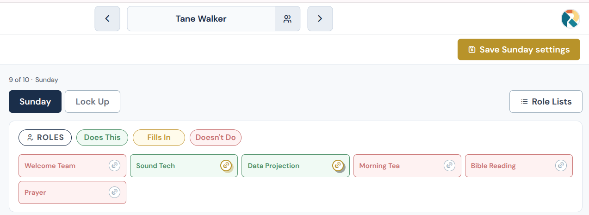
A highlighted green circle boarder marks paired roles in profile settings.
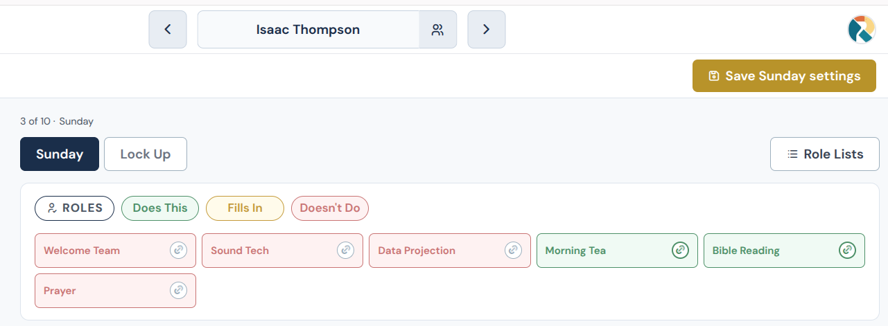
On the Board, the matching assignment cards carry the same colours.
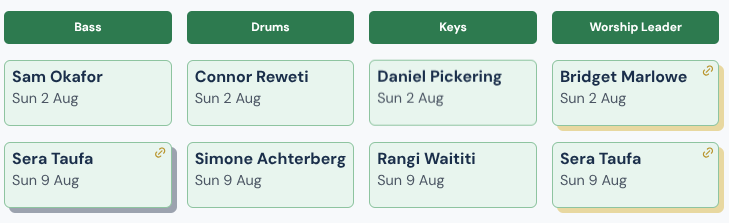
Frequency — how often they serve
The Frequency control — labelled ONCE EVERY — caps how often this volunteer is rostered in this roster, so nobody is over-used even when they're always available. Tap a pill: No cap, or once every 1wk through 12wk.
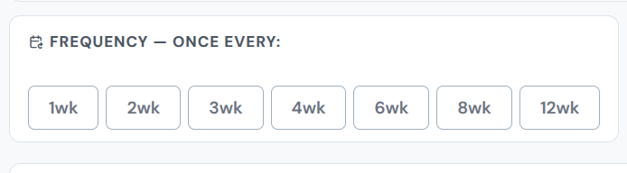
Relational rostering — serving together
Relational rostering asks Rostas to place people together on the same dates — a Buddy they like to serve alongside, or a Household so family members share the same rota. Turn on "Serves With" and pick who.
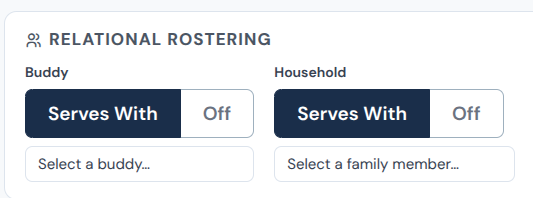
Next roster availability
The availability grid shows this volunteer's responses for the upcoming dates — the same three states they set on their own form:
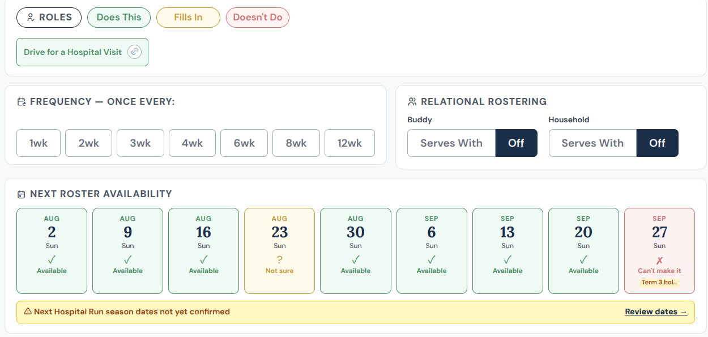
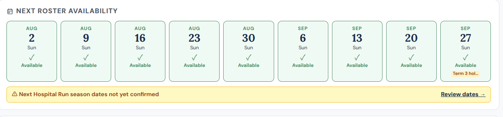
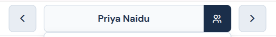
Adding a Volunteer to a New Roster
If a volunteer starts serving in an additional roster type, click the inactive roster tab on their detail page. A confirmation dialog appears — confirm to add them to that roster. Their settings for the new roster start fresh and can be configured from the right panel.
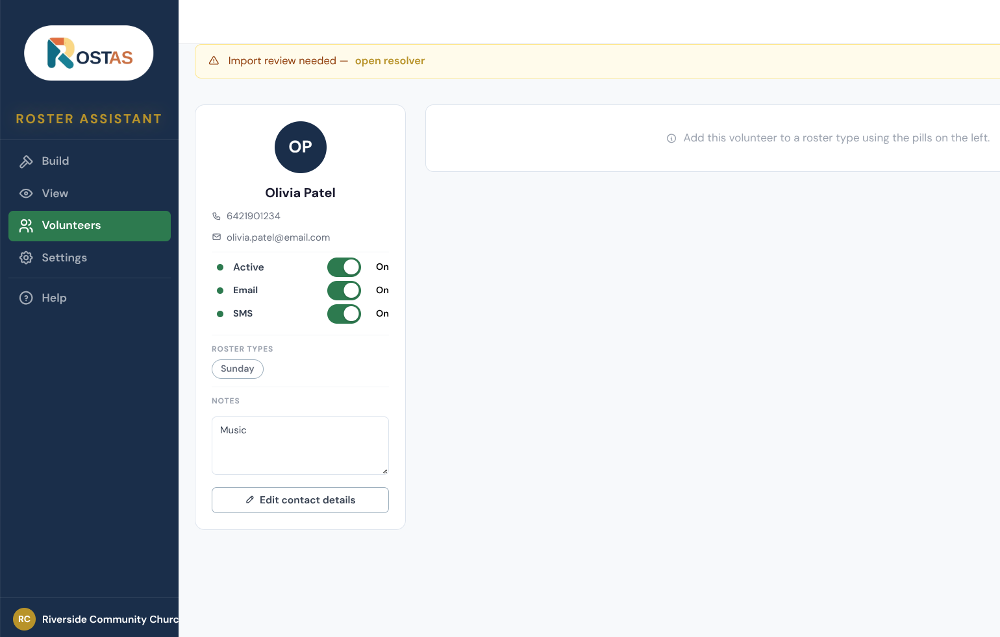
What Volunteers See
Volunteers interact with Rostas entirely through personalised links or codes sent by email or SMS - currently there is no app to download. There are three volunteer-facing pages:
| Page | When it's sent | What volunteers do |
|---|---|---|
| Availability form | When you run Step 3 of the Roster Wizard | Mark which dates they're available, not sure, or can't make it |
| Roster notification | When you send notifications in Step 6 | View their assignments, tap "Can't make it" link, Print roster link. |
| Replacement request | Automatically during the SMS replacement chain | Accept or decline a slot via SMS code entered in https://rostas.app/enter |
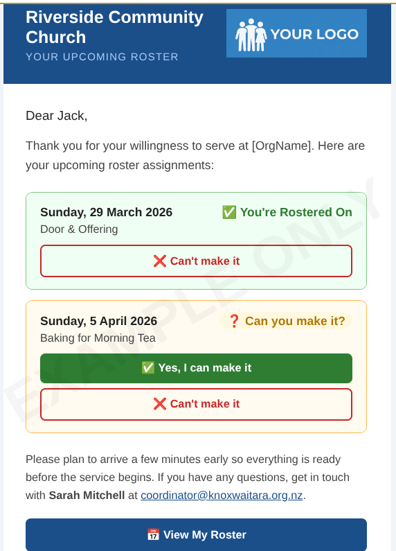
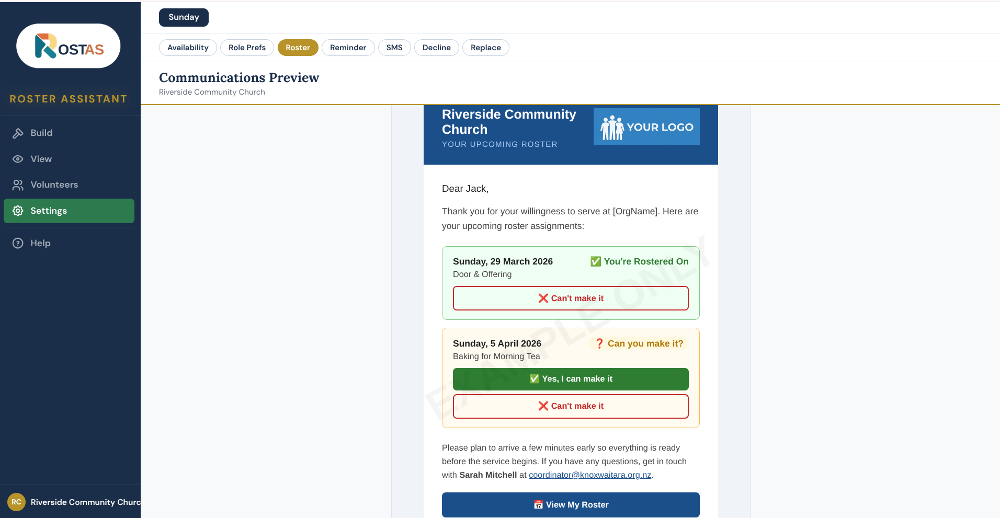
There are two roster wizards in Rostas. The New Roster Wizard runs once when you set up a new roster type — it defines the name, roles, season dates, and volunteers. The Roster Wizard runs every few weeks to collect availability, build the roster, and send notifications to volunteers.
Both start from the Builds dashboard.
The Builds Dashboard
The Builds dashboard is your home base for all roster activity. Open it by clicking Builds in the sidebar. Every roster type appears as a full-width row — one per roster — so you can see the state of your whole operation at a glance and act on any roster without leaving the page.
The state button
The button on the left of each row is dynamic — its colour and label tell you exactly where that roster is in its cycle, and clicking it always picks up at the right next step. You never have to remember where you left off.
| State | What it means | Clicking it… |
|---|---|---|
| First Setup | A brand-new roster type that hasn't been built yet. | Starts the first build. |
| Season Confirmed | The season's dates are set and it's ready to begin a build. | Starts building. |
| Gathering | Availability emails have gone out and responses are coming in — the state you'll sit in for a few days each cycle. (You'll also see it briefly while the roster itself builds.) | Continues where you left off. |
| Ready to Send | Built and reviewed — waiting for you to send notifications. | Continues to the notify step. |
| Active | Notifications sent — the roster is live for the current cycle. | Starts the next rebuild. |
| Paused | The roster is paused — no builds, reminders, or replacements run. | Resumes the roster. |
The date-chip strip
Each row shows a strip of small date chips — the roster's recent and upcoming service dates. The colours are deliberately simple: blue means a date that has already passed, and green means an upcoming date. It's an at-a-glance sense of where each roster sits in time.
On the right of each row, the ⋯ menu holds the rest of what you can do with a roster — pausing, adjusting dates and roles, resetting, or deleting. See The Build Menu below for the full walkthrough.
The New Roster Wizard
Run this wizard when you're setting up a roster type for the first time — for example, adding a Music roster or a Hospitality team. It takes about 10 minutes and walks you through five steps: Name & Icon, Roles, Season, Volunteers, and Review.
Step 1 — Name & Icon
Give your roster a short name and choose an icon. The name appears in SMS messages, emails, and the coordinator app — so keep it brief and clear.
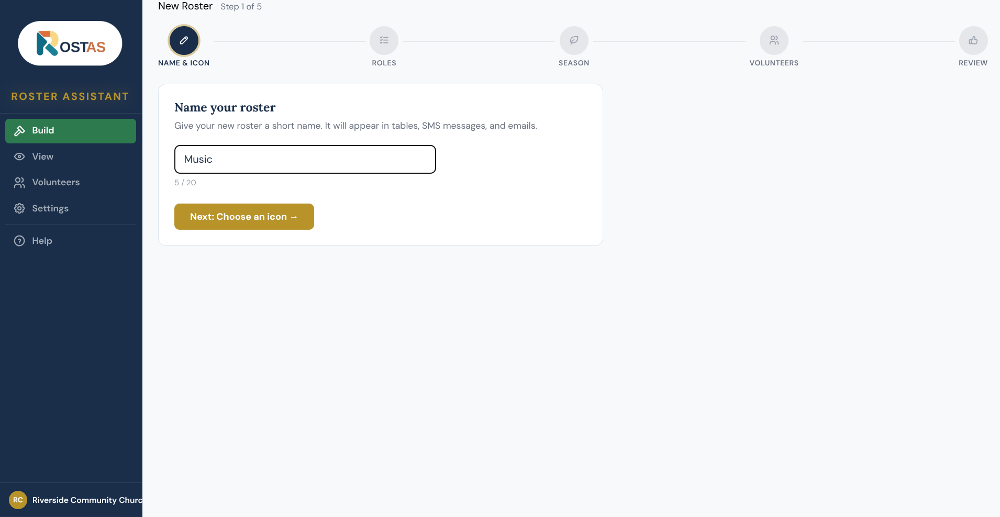
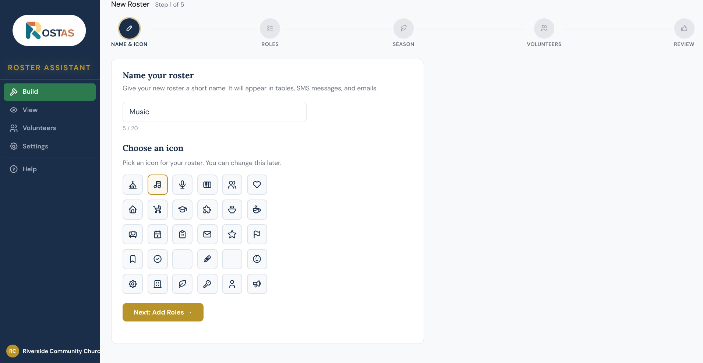
Step 2 — Roles
Define the roles that need to be filled each time this roster runs. For each role, set a minimum and maximum number of people required. You can add, rename, or retire roles later from Managing Roles.
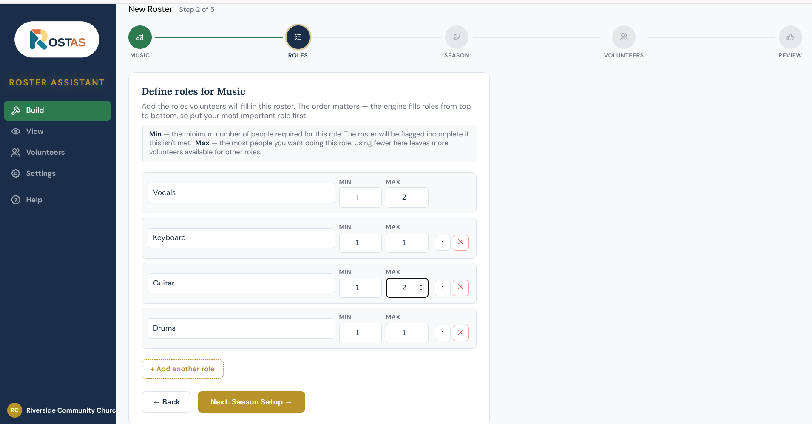
Step 3 — Season
A season defines the date range, frequency, and day of week for this roster. Rostas uses seasons to calculate which dates to roster for, and to overlay public and school holidays automatically.
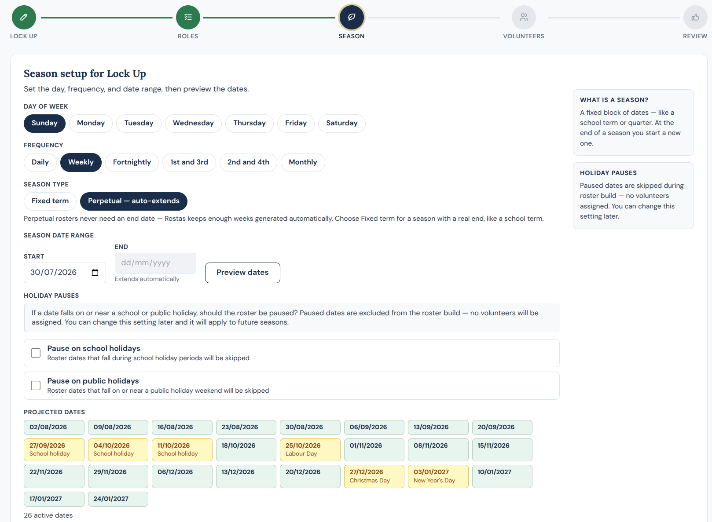
| Field | What to enter |
|---|---|
| Start date | The first date this roster will run |
| End date | The last date of a fixed-term season (a perpetual roster needs no end date — see Season type below) |
| Frequency | Daily, Weekly, Fortnightly, 1st and 3rd, 2nd and 4th, or Monthly |
| Day of week | Which day the roster runs — e.g. Sunday, Monday |
| Season type | Fixed term (has a real end date) or Perpetual (ongoing — auto-extends). See Season type for the difference. |
| Pause school holidays | Tick if this roster doesn't run during school holidays |
| Pause public holidays | Tick if this roster doesn't run on public holidays |
Step 4 — Volunteers
Select which volunteers from your list will serve on this roster. Tick each volunteer you want to include. Only volunteers already in Rostas appear here — if someone is missing, add them in Profiles first then return to this step.
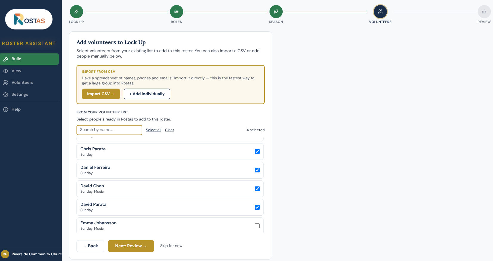
Step 5 — Review
The final step shows a summary of everything you've set up — roster name, icon, roles, season dates, and volunteer count. Review it carefully before confirming.
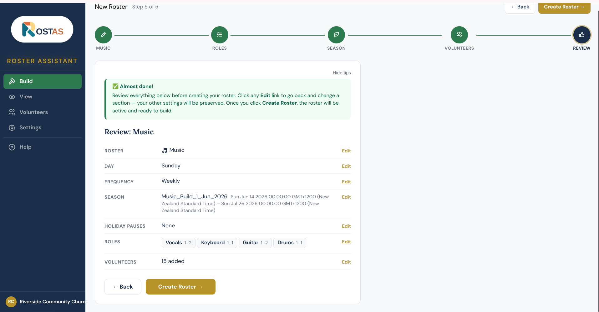
Click Confirm & Create Roster to finish. Your new roster type appears on the Builds dashboard immediately. You're now ready to run your first Roster Wizard for this roster.
The Roster Wizard
The Roster Wizard is the recurring roster cycle you run every few weeks. Each roster type has its own — the page is headed "[Your roster] Roster Wizard" — and it takes you through the same six named steps every time: Confirm Dates & Roles, Role Prefs, Availability, Build Roster, Check Roster, and Notify. A progress rail across the top shows where you are, marking each step Completed, Skipped, In progress, or still to come.
To start, open the Builds dashboard and click a roster's state button. If a build is already in progress, you're taken straight back to the step you left off at.
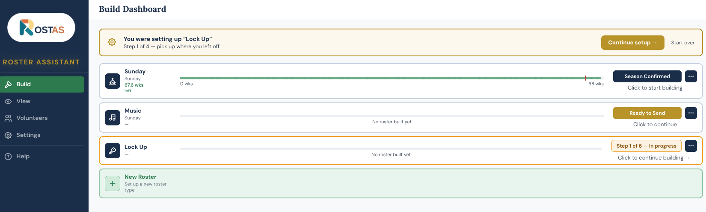
Step 1 — Confirm Dates & Roles
This first step is where you confirm two things for the build: which dates it covers, and which roles (and how many people per role) are in play. Behind the scenes it also refreshes your seasons calendar and overlays public and school holidays, so the dates are correct before availability goes out.

Step 2 — Role Prefs
This step lets volunteers update their role preferences — which roles they're willing to perform. You can send a role-preference email to all volunteers, or skip the step entirely.
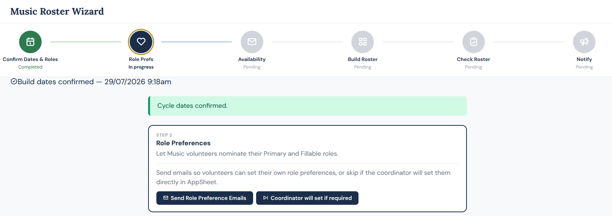
Step 3 — Availability
Rostas emails all active volunteers asking which upcoming dates they're available. Each volunteer receives a personalised link — no login required. They tap their dates, mark any they can't make, and save.
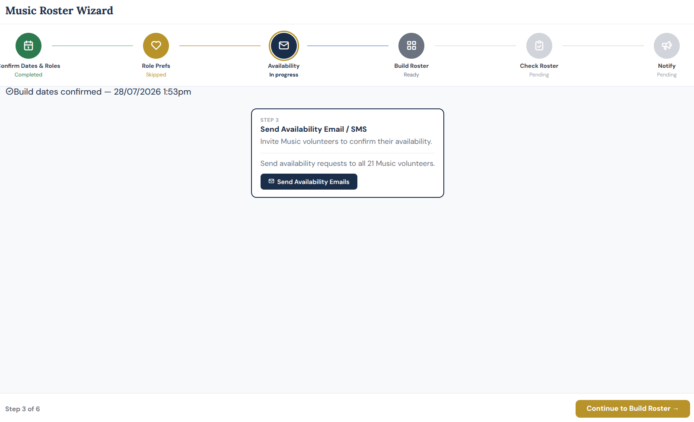
Step 4 — Build Roster
The roster engine analyses every volunteer — their availability, role preferences, how recently they've served, and their frequency cap — and fills every slot automatically. The build takes a few minutes for most rosters.
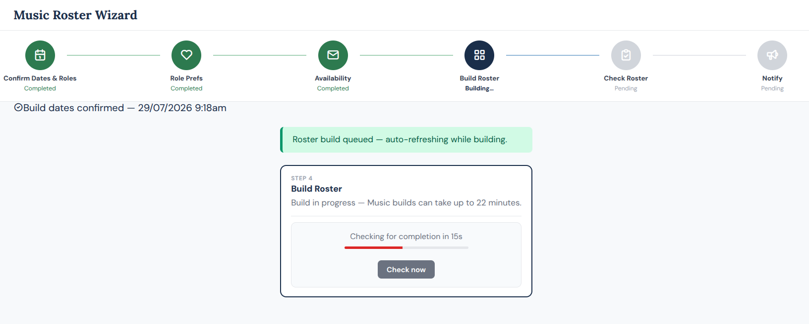
Step 5 — Check Roster
Before anything is sent to volunteers, you review what Rostas has built. Clicking Open Roster Board opens the board in review mode — you can see every assignment, make any manual changes, and return to the wizard. The Communications Preview in Settings lets you see exactly what each volunteer will receive before you send.
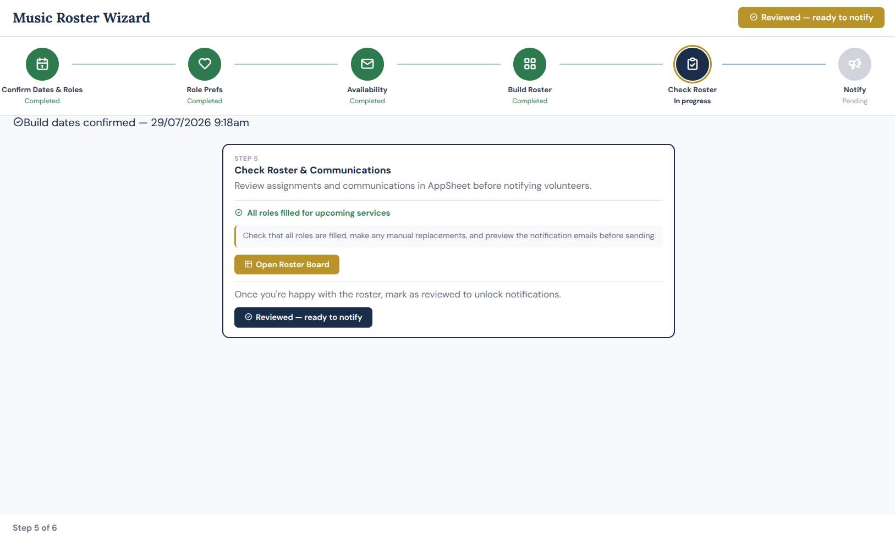
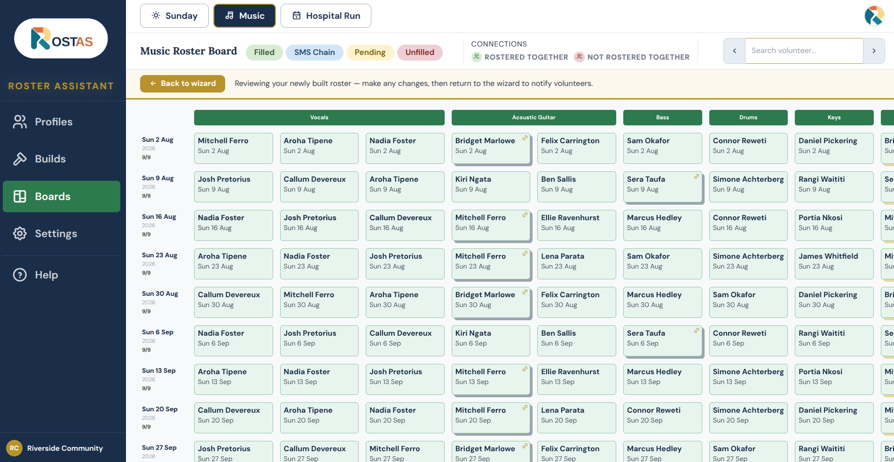
Step 6 — Notify
Once you're satisfied with the roster, click Send Notifications Now. Every rostered volunteer receives a personalised email with their assignments and a "Can't make it?" link.
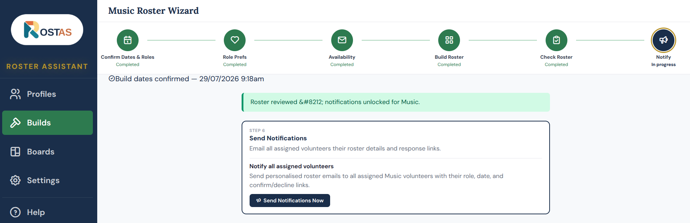
- Email reminder sent 3 days before each service date
- Depending on Settings SMS reminder can be sent 1 day before each service date
- If a volunteer taps "Can't make it" — the SMS replacement chain starts automatically
The Build Menu
The ⋯ menu on the right of each row on the Builds dashboard holds everything you do with a roster between builds — pausing it, adjusting its dates or roles, changing how often it runs, clearing its data, or deleting it outright. Click it to open a pop-up of options.
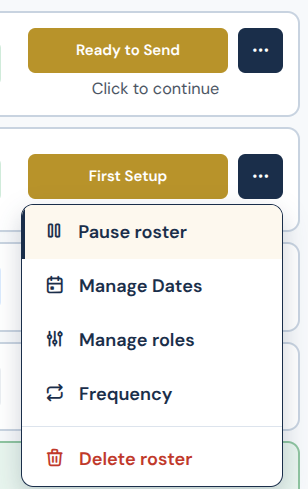
| Option | What it does |
|---|---|
| Pause roster / Resume roster | Temporarily stops all activity for this roster — no builds, reminders, or replacements — without losing any history. The same option resumes it. See below. |
| Manage Dates | Opens the Build Dates screen on its own, so you can adjust which dates this roster runs on — remove one, shift the build boundary, or add a one-off extra date. See Confirming Build Dates below. Changes apply from the next build onward — dates already built are never changed retroactively. |
| Manage roles | Opens the roles screen for this roster — add, rename, set headcounts, or deactivate roles. See Managing Roles below. Also applies from the next build onward. |
| Frequency | Opens the Frequency page, where you set how often the roster runs and its season type. See Frequency & Season Type below. |
| Reset roster data | Wipes this roster type's operational data — assignments, availability, replacement history — while keeping the roster shell, its roles, your volunteers, and your settings intact. See Resetting Roster Data below. |
| Delete roster | Permanently removes the roster type and everything tied to it. See Deleting a Roster below. |
Pause / Resume roster
Pausing a roster stops all activity for it immediately — no builds, reminders, or replacement chains run — without losing any history. The menu option and the row's state button both switch to Resume roster while paused; click either to pick back up exactly where you left off.
Confirming Build Dates
Before each build you confirm exactly which dates it covers, on the Build Dates screen. It lays out your roster's dates in three bands — what's already built, what this build will cover, and what's coming next — and lets you drop a date you don't want, shift the boundary between builds, or add a one-off extra date such as Christmas Day or Good Friday.
You reach it two ways: as the first step of a build (Confirm Dates & Roles), or on its own from the Builds dashboard — ⋯ — Manage Dates.
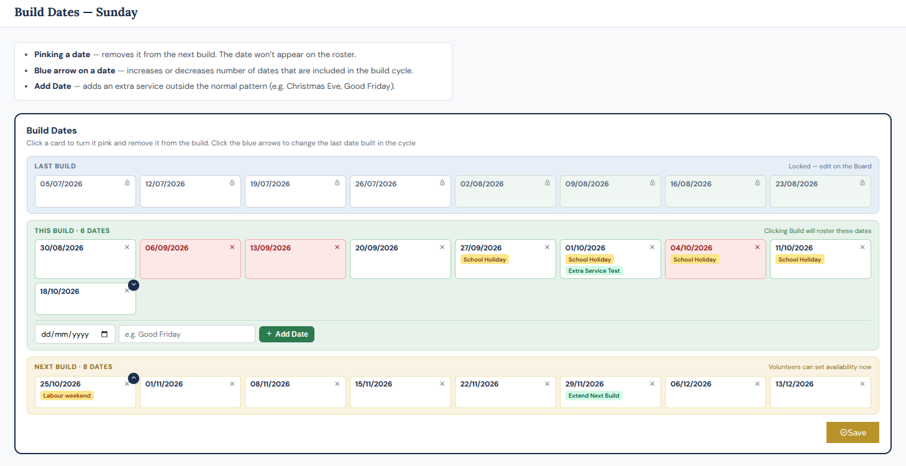
| Band | What it means |
|---|---|
| Last Build | Dates already built in the previous cycle. Each card shows a padlock — these are locked and can't be changed here. If something needs fixing on a date that's already built, do it on the Board instead. |
| This Build | The dates the next build will cover — the band header shows a running count (e.g. "This Build · 9 dates"). These are being confirmed right now; clicking Build will roster them. |
| Next Build | Dates coming after this build, also with a running count. Volunteers can already set their availability for these — it's a look-ahead so nothing catches them by surprise. |
| Excluded | A date you've removed from This Build or Next Build — turned pink so it won't be rostered. |
Removing a date
Click the × on any card in This Build or Next Build to exclude it — the card turns pink and drops out of the build. Click it again to bring the date back. Cards in Last Build can't be removed this way, since they're already built.
Shifting the boundary between builds
A small chevron sits on the date at the boundary between This Build and Next Build. Click it to move that date across the line — pulling the next upcoming date into This Build to extend how far this build reaches, or sending the last date of This Build back into Next Build to shorten it.
Adding an extra date
Use the date field and label box beneath This Build to add a one-off service outside the normal pattern — Christmas Eve, Good Friday, a special event. Pick the date, type a short label (e.g. "Good Friday"), and click + Add Date. The new card appears in This Build with your label shown as a tag, and is included the next time you build.
Managing Roles
Once a roster exists, you can add, rename, re-size, or retire its roles at any time. Open the Builds dashboard, click the ⋯ menu on the roster's row, and choose Manage roles. The page lists every role for that roster with its headcount and an active switch.
| Action | How |
|---|---|
| Add a role | Use the add option at the bottom of the list; enter the name and its minimum and maximum headcount. |
| Rename a role | Use Rename on the role. The new name appears in future messages to volunteers. |
| Change headcount | Adjust the minimum and maximum for how many people the role needs each time. |
| Deactivate a role | Switch it to Inactive. It drops out of future builds but keeps its history, and you can reactivate it any time. |
Frequency & Season Type
There are two separate frequency ideas in Rostas: how often the roster runs, and how often each volunteer serves. This section covers the roster side — its cadence and whether the season is fixed or ongoing. The per-volunteer cap is set on each person's profile (see Frequency on the Profile detail page); the two are explained together at the end.
Roster cadence — how often the roster runs
Not every roster runs weekly. A community meal might run fortnightly, a kids' ministry only on the 1st and 3rd Sunday, a review team monthly. The Frequency page sets this cadence per roster type — it decides which dates appear in the season, and therefore which dates Rostas builds for. You reach it two ways: when you first create a roster (in the New Roster Wizard's first step), or any time afterwards from the Builds dashboard — ⋯ — Frequency.
| Option | When to use it |
|---|---|
| Daily | Roster runs every day it applies — e.g. a hospital-visit or meals roster |
| Weekly | Roster runs every week — e.g. Sunday service |
| Fortnightly | Roster runs every two weeks |
| 1st and 3rd | Runs on the 1st and 3rd occurrence of the day each month |
| 2nd and 4th | Runs on the 2nd and 4th occurrence of the day each month |
| Monthly | Runs once a month — e.g. a quarterly review team |
Season type — fixed-term or perpetual
Below the cadence pills, the Season Type control decides whether this roster has an end or simply keeps going:
| Type | What it means |
|---|---|
| Fixed-term | The season has a real start and end date. Use it for anything with a natural finish — a school term, a set programme, a holiday series. |
| Perpetual (ongoing) | The roster runs indefinitely with no end date to manage. Rostas keeps enough weeks generated ahead automatically, so a perpetual roster never runs out of dates. |
Volunteer frequency cap — how often a person serves
Separate from the roster's cadence, each volunteer has their own cap — how often they personally get rostered — so nobody is used every week just because they're always free. You set it on each person's profile (Frequency on the Profile detail page), independently for each roster they serve in. The two settings work together:
| Example | Roster cadence | Volunteer cap | Result |
|---|---|---|---|
| Sunday team volunteer | Weekly | Once every 2wk | Rostered roughly once a fortnight |
| Sound desk specialist | Weekly | No cap | Rostered most Sundays (willing and able) |
| Occasional helper | Fortnightly | Once every 4wk | Rostered roughly once a month |
Resetting Roster Data
Reset roster data clears a roster type's operational history — built assignments, availability responses, replacement chains — without touching the roster's setup: its roles, volunteers, and season stay exactly as they are. It's a pick → preview → confirm flow: choose the roster type, review what will be cleared, then confirm.
Deleting a Roster
Delete roster permanently removes the roster type — its shell, roles, seasons, build history, and every assignment tied to it. Unlike Reset, there's no going back.
The Roster Board is where you manage the roster between builds. You'll come here to check on replacement progress, make manual swaps, confirm pending assignments, or search for a specific volunteer. Access it by clicking Boards in the sidebar.
Reading the Board
The Board shows every roster date as a row, with roles as columns. Each cell shows the assigned volunteer's name and date. Colour coding tells you the status of each assignment at a glance.
| Colour | Status | What it means |
|---|---|---|
| Green | Filled | Volunteer confirmed and rostered. No action needed. |
| Amber | Pending | Volunteer marked Not sure — provisionally assigned, awaiting confirmation. |
| Blue | SMS Chain | Replacement chain active — Rostas is texting backup volunteers automatically. |
| Red | Unfilled | No volunteer assigned. Needs attention. |
| White | Excluded | Date was excluded from this roster during confirmation. Not a gap to fill — nothing needs doing. |
Legend and Frequency
The legend row at the top of the board shows the five cell states. To the right, the volunteer search (with ◀ ▶ navigation arrows) lets you find a specific person and step through volunteers one by one. The Frequency panel shows how often the currently searched volunteer is rostered and when they were last assigned.
Taking Action on a Cell
Click any cell on the board to select it. The selected cell gets a navy border and a sticky action bar appears above the green roles headings — showing the volunteer's name, role, date, and current status, with action buttons on the right.
| Action | What it does | When to use it |
|---|---|---|
| Save as filled | Confirms the assignment — changes cell to green | When a pending volunteer has confirmed verbally or you want to lock in an assignment |
| Save as declined | Marks the volunteer as declined and starts the automated SMS replacement chain | When a volunteer tells you they can't make it and you want Rostas to find a replacement automatically |
| Replace | Opens the replacement panel showing tiered candidates with Select buttons | When you want to pick the replacement yourself rather than let the SMS chain run |
| Swap with… | Swaps this assignment with another volunteer's slot — both move at once. Rostas flags any clashes as amber warnings, but they're advisory: you can always proceed. | When two rostered volunteers want to trade dates |
| Close | Deselects the cell without making any changes | When you clicked the wrong cell or want to exit |
Swapping two volunteers
When two rostered volunteers want to trade dates, use Swap with… from the action menu. Click the first volunteer's cell, choose Swap with…, and that card is "armed" — it takes a gold border. Then click the cell you want to swap it with.
Manual Replacement
When you click Replace, the replacement panel appears below the action bar showing all available volunteers for that role and date, sorted by priority tier. Each volunteer shows their availability status and how recently they've been rostered.
Assigning a Second Role on the Same Date
Occasionally a volunteer may need to cover two roles on the same date — for example, stepping in for a missing team member while also serving in their usual role. Rostas supports this but flags it clearly so you're making a deliberate choice rather than an accidental double-booking.
The SMS Replacement Chain
When a volunteer taps "Can't make it" in their notification email — or when you click Save as declined on the board — Rostas starts the automated SMS replacement chain. It works through available volunteers one at a time until someone accepts.
| What happens | Timing |
|---|---|
| Rostas identifies the next eligible volunteer and sends them an SMS | Immediately (within quiet hours) |
| If they accept — slot is filled, original volunteer released | As soon as they reply |
| If they decline or don't respond — next volunteer is contacted | After 2 hours (normal) or 30 min (urgent, within 24hrs of service) |
| If no one accepts — coordinator receives an escalation SMS | After list is exhausted |
The request text carries a 4-digit code rather than a link — NZ networks filter many link-bearing texts, and a code is shorter and cheaper to send. The volunteer enters it at rostas.app/enter to reach the accept / decline page. See Part A for the full explanation of code entry.
Searching for a Volunteer
Use the search field at the top right of the board to find a specific volunteer. As you type, their assignments are highlighted across the entire board — making it easy to see all their upcoming dates at once. Use the ◀ ▶ arrows to step through volunteers alphabetically. The Frequency panel shows how often the current volunteer is rostered and when they last served.
The Settings view is where you configure how Rostas behaves — your organisation's identity, SMS credentials, message wording, timing rules, and more. Open it by clicking Settings in the left sidebar.
The Settings View
Finding your way around
The Settings view has two parts that work together.
The chip strip runs across the top and lets you jump directly to any category — Org, Contacts, SMS, Wording, Timing, Controls, System Status, and Advanced. Clicking a chip scrolls the left panel to that section instantly. The Communications chip (gold, with an arrow) opens the Communications Preview in place of Settings — use it to see how your message templates look before sending.
The search bar (top right, "Search settings…") filters the left panel live as you type. It searches across setting names and descriptions simultaneously — so typing "SMS" shows not just the SMS category but any setting whose description mentions SMS, across all categories. Non-matching rows disappear; categories with no matches collapse. Clear the search to restore the full list.
The two-column layout
- Left panel — the scrollable list of all settings, grouped by category. Each row shows the setting name, a one-line description, and its current value on the right. Click any row to open it for editing.
- Right panel — appears when you click a row. Shows the full description, an example value, the input field, and Save/Cancel buttons. The panel stays fixed while you scroll the left panel, so you can read and compare other settings without losing your place.
To close the right panel without saving, click Cancel or click a different row.
Editing a setting
- Click the row in the left panel. The right panel opens showing the setting name, description, and current value pre-filled in the input.
- Make your change. The input type matches the setting — dropdowns for timezone and country code, toggles for on/off settings, text fields for everything else.
- Validation runs as you type or on blur. If the value is invalid (wrong format, missing required content) the field turns red with an explanation. The Save button stays disabled until the value is valid.
- Click Save. The left panel updates immediately to show the new value — no page reload needed.
Using System Status
The System Status card and the settings list below it are designed to work together. The card tells you what's wrong; the settings list is where you fix it.
Treat System Status as your starting point every time you open the Settings page. Before searching for a specific setting or making a planned change, glance at the Warnings column first. If it shows green — "All systems go" — you can proceed. If it shows amber or red, deal with those first, because some warnings mean volunteers aren't receiving messages right now.
Following a warning to its fix
Every warning in the System Status card maps directly to one or more settings in the list below. Rather than hunting through categories manually, use the search bar — the warning text itself usually contains the keyword you need:
| You see this warning | Search for this | Setting to change |
|---|---|---|
| SMS is disabled | SMS enabled | SMS → SMS enabled → turn on |
| SMS test mode is ON | test mode | SMS → SMS test mode → turn off |
| Email test mode is ON | test mode | Quick Controls → Email test mode → turn off |
| SMS is not set up yet | — | Contact support@rostas.app — this one can't be fixed from Settings, as SMS sending is provisioned by Rostas |
| Web app URL not set | web app | Advanced → Web app URL |
The typical workflow is: see the warning → type the keyword into the search bar → click the matching row → fix it in the right panel → save. The whole thing takes under a minute once you know the pattern.
After making a change, check the card again
The System Status card doesn't update automatically when you save a setting — it loaded when you opened Settings and reflects that moment in time. After fixing a warning, click Refresh in the System Status card header to reload it and confirm the warning has cleared.
Understanding your roster's rhythm
Once warnings are clear, the lower sections of the card give you a different kind of visibility — not problems to fix, but patterns to understand. Two of them are worth checking regularly.
- Recent Activity — a running list of the last twenty things Rostas did, newest first, across every level (routine actions, warnings, and errors). This is your first-stop diagnostic: if a volunteer says they didn't get a message, or you're not sure whether a job ran, this list shows what actually happened and when. A steady stream of recent entries means Rostas is ticking over normally; a list whose newest entry is days old may mean the daily triggers have stopped running.
- Communication Failures — the most direct troubleshooting tool, shown in the Warnings column. When all is well it reads "No comms failures"; otherwise it lists recent send errors and warnings. If a volunteer tells you they never received a replacement SMS, check here for an entry on the date in question. If you see nothing at all for that date, the message may have been suppressed before sending — check SMS enabled, test mode, and quiet hours.
The card also shows activity and communications counts over the past seven days, plus replacement outcomes once you've run a few cycles. A high replacement-timeout rate can mean your replacement timers are too short for how quickly your volunteers reply, or that quiet hours are limiting the available sending window.
Settings Categories
- Organisation — your organisation's name, tagline, timezone, country calling code, contact email, website, and volunteer-facing logo. The organisation name is the most important field: it appears in every SMS and email sent to volunteers as [OrgName]. Get this right first.
- Coordinator Contacts — your name, email, and mobile, plus per-roster coordinator contacts for Sunday, Music, Nourish, and any other roster types you've added. The per-roster contacts receive escalation alerts when a replacement chain is exhausted with no one found.
- SMS — the SMS kill switch, test mode toggle, quiet hours, and replacement timers. See SMS settings in detail below.
- Message Wording — every SMS template and email text block that Rostas sends to volunteers. SMS templates show a live character counter and required placeholder checker. See Message wording below.
- Timing & Behaviour — how many weeks ahead to build rosters, freeze weeks, availability form deadline, reminder timing, and public holiday region. The Public holidays region field includes a dropdown of supported countries and a "Fetch holidays now" button — use this to pull the latest public holidays for your country whenever you update this setting.
- Quick Controls — per-roster active toggles and email test mode. Useful for temporarily hiding a roster from the Build wizard without deleting it, or for switching email test mode on and off quickly.
- Advanced — settings that affect system internals (web app URL, roster type list, AWS SMS keys). These are locked by default. Click Unlock to edit in the right panel and read the warning carefully before changing anything here. Incorrect values can stop roster builds or break SMS links. Contact tech support if unsure.
SMS Settings in Detail
Three settings here are worth understanding before you go live.
SMS enabled — the master kill switch. When this is false, no SMS leaves Rostas at all — not replacements, not reminders, not test sends. The System Status card shows a red warning when this is off. Only disable it deliberately (e.g. during a migration or if your Twilio account lapses).
SMS test mode — when true, every SMS that would go to a volunteer is redirected to the coordinator mobile instead. The message is prefixed with [TEST - would go to candidate]. Use this while setting up or testing replacement chains. Turn it off before your first real roster cycle. The System Status card shows an amber warning when test mode is on.
Quiet hours — SMS quiet hours start and end are set as 24-hour values (e.g. 21 = 9pm, 8 = 8am). Rostas will not send any SMS outside this window, including replacement chain advances. If a replacement request hits quiet hours, it waits until the quiet period ends before texting the next candidate. The default is 9pm–8am.
Replacement timers — three escalation speeds:
- Normal (default 120 min) — used when the service is more than 24 hours away
- Urgent (default 30 min) — used when the service is within 24 hours
- Panic (default 10 min) — used when the service is within 2 hours
If volunteers are frequently timing out before responding, consider increasing the normal timer. If you're often scrambling at short notice, reducing the urgent or panic timers gets through the candidate list faster.
Reminder SMS mode — controlling reminder texts
The day-before reminder text is the single biggest driver of SMS cost — one text per rostered volunteer, every service. The Reminder SMS mode setting decides who actually receives it. (The 3-day reminder email is unaffected and still goes to everyone with an email address.)
| Mode | Who gets the day-before text |
|---|---|
| Text everyone | Every rostered volunteer gets a text, even if they already confirmed by email. |
| Email-first (recommended) | Texts only those who need it: volunteers with no email address, those who haven't confirmed the reminder email, and anyone set to "Always text too". Keeps SMS costs down. |
| Text no-one | No day-before texts at all. Overrides "Always text too". |
Message Wording
Every SMS template has three protections built in to prevent accidental breakage.
- Character counter — SMS messages over 160 characters are split into two by carriers and charged as two texts. The counter below the textarea turns amber at 140 characters and red at 161+. The Save button is disabled when the count is red. The SMS templates are deliberately terse for this reason — when you edit one, the counter is protecting your church's SMS costs, not just formatting.
- Required placeholders — each template has a set of placeholders that must be present for it to work correctly. For example, the replacement request SMS must include [Code] — without it, the volunteer has no code to enter. (The equivalent email templates require [Link] instead.) Missing placeholders are shown in red below the textarea. Save is blocked until all required placeholders are present.
- Preview SMS — click this button to see the template rendered with realistic sample values substituted in ([Name] → Sarah, [Role] → Welcome Team, [Date] → today's date, [Code] → a sample 4-digit code such as 4821). This shows you exactly what a volunteer will read, at the correct character count. It does not send a real SMS.
The Message Wording category holds every message Rostas sends — the SMS templates (availability nudge, day-before reminder, replacement request, replacement confirmed, coordinator escalation) and the email templates (roster notification, availability request, reminder, swap). Edit any of them here; the three protections above apply to each.
Template Placeholders
SMS and email templates use placeholders in square brackets that Rostas replaces with real values when sending. Never remove a required placeholder — if a required one is missing, the Save button is blocked.
| Placeholder | What it becomes |
|---|---|
[Name] | The volunteer's first name |
[Role] | The role they've been assigned to |
[Date] | The date of the service |
[Link] | A personalised link to accept or decline. Email templates only — SMS templates use [Code] instead |
[Code] | A single-use 4-digit code the volunteer types at rostas.app/enter. SMS templates only |
[Deadline] | The time by which they need to respond |
[OrgName] | Your organisation name from Settings |
SMS Credits
Sending SMS costs money — unlike email, every text has a real per-message cost from the mobile networks. Rostas covers this with a simple prepaid credit system: one credit sends one text. Credits are used for reminders, replacement requests, and availability nudges, and they never expire — you top up whenever your balance runs low.
| Pack | Texts | Roughly lasts |
|---|---|---|
| NZ$50 | 250 texts | A couple of months for a typical church |
| NZ$100 | 500 texts | Around four to six months |
| NZ$150 | 750 texts | Most of a year |
| NZ$200 | 1,000 texts | About a year |
Quick Controls
Quick Controls contains the most commonly needed on/off switches. Check these if something isn't behaving as expected.
| Setting | What it does | Default |
|---|---|---|
ROSTER_ACTIVE_{Type} | Shows or hides a roster type on the Builds dashboard | True |
SMS_ENABLED | Master switch for all SMS. False = no SMS anywhere in the system | True |
SMS_TEST_MODE | Redirects all SMS to coordinator phone only. Use for testing. | False |
EMAIL_TEST_MODE | Redirects all emails to coordinator email only. Use for testing. | False |
SMS_TEST_MODE or EMAIL_TEST_MODE is True, volunteers will not receive any messages — only you will.
Advanced Settings
The Advanced section is collapsed by default and greyed out. It contains settings that the system needs to function but that coordinators rarely need to touch. Changing them incorrectly can cause roster builds to fail or SMS links to break.
To edit an advanced setting: click the row, read the amber warning in the right panel, then click Unlock to edit. The field becomes editable. Save as normal.
The most common reason a coordinator needs the Advanced section is after redeploying Rostas — the Web app URL must be updated to match the new deployment URL. If short links in SMS stop working after a redeployment, this is almost always the cause.
Setup Checklist
After the initial setup wizard completes, a checklist card appears at the top of the Settings view. It shows which setup tasks are done and which still need attention before going live. The checklist covers ten items — click any incomplete item to jump straight to the relevant setting.
| Checklist item | What it checks |
|---|---|
| Organisation name set | ORGANISATION_NAME is not blank |
| Coordinator contact set | COORDINATOR_NAME, ORG_EMAIL, COORDINATOR_PHONE are present |
| SMS verified | SMS sending is provisioned and SMS_ENABLED is on |
| Logo added | VOLUNTEER_LOGO_URL is set |
| Coordinator contacts per roster type | At least one per-roster coordinator key is set |
| SMS test mode off | SMS_TEST_MODE is not true |
| Email test mode off | EMAIL_TEST_MODE is not true |
| Web app URL configured | WEBAPP_URL is not blank |
| Public holidays fetched | PUBLIC_HOLIDAYS_LAST_FETCHED is present |
| First season confirmed | At least one roster type has a confirmed season |
Troubleshooting
Most issues in Rostas fall into a small number of categories. Work through this list before contacting tech support.
Volunteers aren't receiving SMS messages
- Check Settings → Quick Controls → SMS_ENABLED is True
- Check SMS_TEST_MODE is False — if True, all messages go to the coordinator only
- Check the volunteer's SMS toggle is On in their detail page
- Check quiet hours — SMS won't send between 9pm and 8am
- Check the volunteer's mobile number is in correct international format (+64...)
- Check the System Status communication failures table for error messages on the relevant date
Volunteers aren't receiving emails
- Check EMAIL_TEST_MODE is False in Quick Controls
- Check the volunteer's Email toggle is On in their detail page
- Ask the volunteer to check their spam/junk folder
- Confirm their email address is correct in their volunteer detail page
Roster has unfilled slots after building
- Check that enough volunteers have responded to the availability email
- Check that volunteers have role preferences set — without preferences set, the engine can't assign them to specific roles
- Check frequency caps — volunteers who've hit their monthly cap won't be assigned further
- Consider rebuilding after more availability responses come in
- Use manual replacement on the Board to fill remaining slots
SMS replacement chain isn't progressing
- Check quiet hours — chain pauses between 9pm and 8am and resumes automatically
- Check SMS_ENABLED is True
- Check there are eligible volunteers left on the backup list — if the list is exhausted you'll receive an escalation SMS
- Use manual replacement on the Board to assign someone directly
When to contact tech support
Contact your tech support person if:
- SMS messages are failing with error messages in the System Status communication failures table
- The web app URL has changed and volunteer links are broken
- You need to change Twilio or other API credentials
- Something is producing repeated errors that don't resolve on their own
- You need to add or remove a roster type
- Anything requiring access to the Google Apps Script editor
Most organisations get their volunteers into Rostas by importing a CSV — it works for everyone and needs nothing more than a spreadsheet. But if your church already keeps its people in another system, a connector can sync them into Rostas automatically, so you don't maintain two lists by hand.
Infoodle
Infoodle is the first connector available in Rostas. Once it's connected, new and updated contacts flow in on their own — a volunteer added in Infoodle appears in your Profiles list without a re-import, and a changed phone number or email updates itself.
When someone is removed in Infoodle, Rostas doesn't delete them out from under you. Instead it flags them with a "Deleted in Infoodle" marker in the Profiles list, so you can confirm they should go and remove them here deliberately — protecting you from losing a volunteer's history by accident.
Other connectors
Infoodle is the first of a growing family of connectors. Support for other church and volunteer platforms — such as Planning Center and Elvanto — is planned, so more organisations can sync rather than import over time.
Rostas Coordinator Guide · June 2026